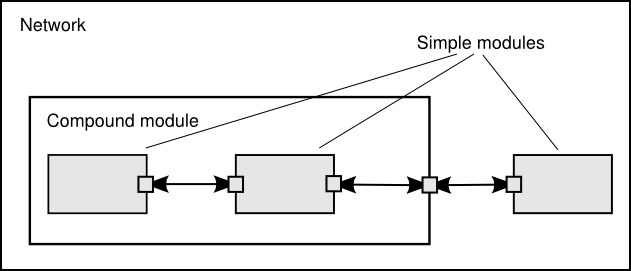

An OMNeT++ model consists of modules that communicate with message passing. The active modules are termed simple modules; they are written in C++, using the simulation class library. Simple modules can be grouped into compound modules and so forth; the number of hierarchy levels is unlimited. The whole model, called network in OMNeT++, is itself a compound module. Messages can be sent either via connections that span modules or directly to other modules. The concept of simple and compound modules is similar to DEVS atomic and coupled models.
In Fig. below, boxes represent simple modules (gray background) and compound modules. Arrows connecting small boxes represent connections and gates.

Modules communicate with messages that may contain arbitrary data, in addition to usual attributes such as a timestamp. Simple modules typically send messages via gates, but it is also possible to send them directly to their destination modules. Gates are the input and output interfaces of modules: messages are sent through output gates and arrive through input gates. An input gate and output gate can be linked by a connection. Connections are created within a single level of module hierarchy; within a compound module, corresponding gates of two submodules, or a gate of one submodule and a gate of the compound module can be connected. Connections spanning hierarchy levels are not permitted, as they would hinder model reuse. Because of the hierarchical structure of the model, messages typically travel through a chain of connections, starting and arriving in simple modules. Compound modules act like "cardboard boxes" in the model, transparently relaying messages between their inner realm and the outside world. Parameters such as propagation delay, data rate and bit error rate, can be assigned to connections. One can also define connection types with specific properties (termed channels) and reuse them in several places. Modules can have parameters. Parameters are used mainly to pass configuration data to simple modules, and to help define model topology. Parameters can take string, numeric, or boolean values. Because parameters are represented as objects in the program, parameters -- in addition to holding constants -- may transparently act as sources of random numbers, with the actual distributions provided with the model configuration. They may interactively prompt the user for the value, and they might also hold expressions referencing other parameters. Compound modules may pass parameters or expressions of parameters to their submodules.
OMNeT++ provides efficient tools for the user to describe the structure of the actual system. Some of the main features are the following:
An OMNeT++ model consists of hierarchically nested modules that communicate by passing messages to each other. OMNeT++ models are often referred to as networks. The top level module is the system module. The system module contains submodules that can also contain submodules themselves (Fig. below). The depth of module nesting is unlimited, allowing the user to reflect the logical structure of the actual system in the model structure.
Model structure is described in OMNeT++'s NED language.
Modules that contain submodules are termed compound modules, as opposed to simple modules at the lowest level of the module hierarchy. Simple modules contain the algorithms of the model. The user implements the simple modules in C++, using the OMNeT++ simulation class library.
Both simple and compound modules are instances of module types. In describing the model, the user defines module types; instances of these module types serve as components for more complex module types. Finally, the user creates the system module as an instance of a previously defined module type; all modules of the network are instantiated as submodules and sub-submodules of the system module.
When a module type is used as a building block, it makes no difference whether it is a simple or compound module. This allows the user to split a simple module into several simple modules embedded into a compound module, or vice versa, to aggregate the functionality of a compound module into a single simple module, without affecting existing users of the module type.
Module types can be stored in files separately from the place of their actual usage. This means that the user can group existing module types and create component libraries. This feature will be discussed later, in chapter [10].
Modules communicate by exchanging messages. In an actual simulation, messages can represent frames or packets in a computer network, jobs or customers in a queuing network or other types of mobile entities. Messages can contain arbitrarily complex data structures. Simple modules can send messages either directly to their destination or along a predefined path, through gates and connections.
The “local simulation time” of a module advances when the module receives a message. The message can arrive from another module or from the same module (self-messages are used to implement timers).
Gates are the input and output interfaces of modules; messages are sent out through output gates and arrive through input gates.
Each connection (also called link) is created within a single level of the module hierarchy: within a compound module, one can connect the corresponding gates of two submodules, or a gate of one submodule and a gate of the compound module (Fig. below).
Because of the hierarchical structure of the model, messages typically travel through a series of connections, starting and arriving in simple modules. Compound modules act like “cardboard boxes” in the model, transparently relaying messages between their inner realm and the outside world.
To facilitate the modeling of communication networks, connections can be used to model physical links. Connections support the following parameters: data rate, propagation delay, bit error rate and packet error rate, and may be disabled. These parameters and the underlying algorithms are encapsulated into channel objects. The user can parameterize the channel types provided by OMNeT++, and also create new ones.
When data rates are in use, a packet object is by default delivered to the target module at the simulation time that corresponds to the end of the packet reception. Since this behavior is not suitable for the modeling of some protocols (e.g. half-duplex Ethernet), OMNeT++ provides the possibility for the target module to specify that it wants the packet object to be delivered to it when the packet reception starts.
Modules can have parameters. Parameters can be assigned in either the NED files or the configuration file omnetpp.ini.
Parameters can be used to customize simple module behavior, and to parameterize the model topology.
Parameters can take string, numeric or boolean values, or can contain XML data trees. Numeric values include expressions using other parameters and calling C functions, random variables from different distributions, and values input interactively by the user.
Numeric-valued parameters can be used to construct topologies in a flexible way. Within a compound module, parameters can define the number of submodules, number of gates, and the way the internal connections are made.
The user defines the structure of the model in NED language descriptions (Network Description). The NED language will be discussed in detail in chapter [3].
The simple modules of a model contain algorithms as C++ functions. The full flexibility and power of the programming language can be used, supported by the OMNeT++ simulation class library. The simulation programmer can choose between event-driven and process-style description, and freely use object-oriented concepts (inheritance, polymorphism etc) and design patterns to extend the functionality of the simulator.
Simulation objects (messages, modules, queues etc.) are represented by C++ classes. They have been designed to work together efficiently, creating a powerful simulation programming framework. The following classes are part of the simulation class library:
The classes are also specially instrumented, allowing one to traverse objects of a running simulation and display information about them such as name, class name, state variables or contents. This feature makes it possible to create a simulation GUI where all internals of the simulation are visible.
This section provides insights into working with OMNeT++ in practice. Issues such as model files and compiling and running simulations are discussed.
An OMNeT++ model consists of the following parts:
The simulation system provides the following components:
Simulation programs are built from the above components. First, .msg files are translated into C++ code using the opp_msgc. program. Then all C++ sources are compiled and linked with the simulation kernel and a user interface library to form a simulation executable or shared library. NED files are loaded dynamically in their original text forms when the simulation program starts.
Running the Simulation and Analyzing the Results
The simulation may be compiled as a standalone program executable; thus it can be run on other machines without OMNeT++ being present, or it can be created as a shared library. In this case the OMNeT++ shared libraries must be present on that system. When the program is started, it first reads all NED files containing your model topology, then it reads a configuration file (usually called omnetpp.ini). This file contains settings that control how the simulation is executed, values for model parameters, etc. The configuration file can also prescribe several simulation runs; in the simplest case, they will be executed by the simulation program one after another.
The output of the simulation is written into result files: output vector files, output scalar files, and possibly the user's own output files. OMNeT++ contains an Integrated Development Environment (IDE) that provides rich environment for analyzing these files. Output files are line-oriented text files which makes it possible to process them with a variety of tools and programming languages as well, including Matlab, GNU R, Perl, Python, and spreadsheet programs.
User Interfaces
The primary purpose of user interfaces is to make the internals of the model visible to the user, to control simulation execution, and possibly allow the user to intervene by changing variables/objects inside the model. This is very important in the development/debugging phase of the simulation project. Equally important, a hands-on experience allows the user to get a feel of the model's behavior. The graphical user interface can also be used to demonstrate a model's operation.
The same simulation model can be executed with various user interfaces, with no change in the model files themselves. The user would typically test and debug the simulation with a powerful graphical user interface, and finally run it with a simple, fast user interface that supports batch execution.
Component Libraries
Module types can be stored in files separate from the place of their actual use, enabling the user to group existing module types and create component libraries.
Universal Standalone Simulation Programs
A simulation executable can store several independent models that use the same set of simple modules. The user can specify in the configuration file which model is to be run. This allows one to build one large executable that contains several simulation models, and distribute it as a standalone simulation tool. The flexibility of the topology description language also supports this approach.
If you installed the source distribution, the OMNeT++ directory on your system should contain the following subdirectories. (If you installed a precompiled distribution, some of the directories may be missing, or there might be additional directories, e.g. containing software bundled with OMNeT++.)
The simulation system itself:
omnetpp/ OMNeT++ root directory
bin/ OMNeT++ executables
include/ header files for simulation models
lib/ library files
images/ icons and backgrounds for network graphics
doc/ manuals, readme files, license, APIs, etc.
ide-customization-guide/ how to write new wizards for the IDE
ide-developersguide/ writing extensions for the IDE
manual/ manual in HTML
migration/ how to migrate your models from 3.x to 4.0 version
ned2/ DTD definition of the XML syntax for NED files
tictoc-tutorial/ introduction into using OMNeT++
api/ API reference in HTML
nedxml-api/ API reference for the NEDXML library
parsim-api/ API reference for the parallel simulation library
migrate/ tools to help model migration from 3.x to 4.0 version
src/ OMNeT++ sources
sim/ simulation kernel
parsim/ files for distributed execution
netbuilder/files for dynamically reading NED files
envir/ common code for user interfaces
cmdenv/ command-line user interface
tkenv/ Tcl/Tk-based user interface
nedxml/ NEDXML library, nedtool, opp_msgc
scave/ result analysis library
eventlog/ eventlog processing library
layout/ graph layouter for network graphics
common/ common library
utils/ opp_makemake, opp_test, etc.
test/ regression test suite
core/ tests for the simulation library
anim/ tests for graphics and animation
dist/ tests for the built-in distributions
makemake/ tests for opp_makemake
...
The Eclipse-based Simulation IDE is in the ide directory.
ide/ Simulation IDE
features/ Eclipse feature definitions
plugins/ IDE plugins (extensions to the IDE can be dropped here)
...
The Windows version of OMNeT++ contains a redistribution of the MinGW gcc compiler, together with a copy of MSYS that provides Unix tools commonly used in Makefiles. The MSYS directory also contains various 3rd party open-source libraries needed to compile and run OMNeT++.
mingw/ MinGW gcc port
msys/ MSYS plus libraries
Sample simulations are in the samples directory.
samples/ directories for sample simulations
aloha/ models the Aloha protocol
cqn/ Closed Queueing Network
...
The contrib directory contains material from the OMNeT++ community.
contrib/ directory for contributed material
akaroa/ Patch to compile akaroa on newer gcc systems
jsimplemodule/ Write simple modules in Java
topologyexport/ Export the topology of a model in runtime
...